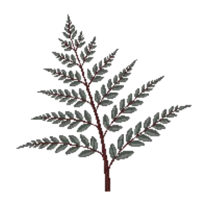

Japanese Painted Fern
Athyrium niponicum 'Pictum'

Japanese Painted Fern is a perennial for edging, groundcover, suited to shade and partial shade and clay, loam or acid soil, flowering varies by climate.
| Type | Perennial |
|---|---|
| Mature height | 45 cm |
| Spread | 45 cm |
| Aspect | shade and partial shade |
| Foliage | Deciduous |
| Hardiness | USDA 4a-8b, RHS H5 |
| Pollinator-friendly | No |
| Pet-safe | Yes |
Where to use it in a border
At around 45 cm, it sits best along the front edge, where a low, spreading habit reads best. Give it about 45 cm of room to spread, roughly 2 to the metre when planted in a drift. It is hardy across USDA zones 4a to 8b and rated H5 by the RHS, so check it suits your area before planting.
It appears in our lists of shade, clay soil, acid soil, pet-safe plants.
Flowering through the year
Worth knowing
- It tolerates acid soil but dislikes shallow chalk.
- It tolerates a shaded, north-facing spot.
Good companions
Plants that share its conditions and style, chosen to complement its place in the border:
- Fatsia 'Spider's Web'for height behind it
- Hosta 'Halcyon'to edge in front
- Japanese Araliafor height behind it
- Autumn Fernto edge in front
- Black mondo grassto edge in front
- Japanese Forest Grassto edge in front
Garden styles
See Japanese Painted Fern set in a full border, with spacing and companions worked out for your own conditions, in Border Builder.